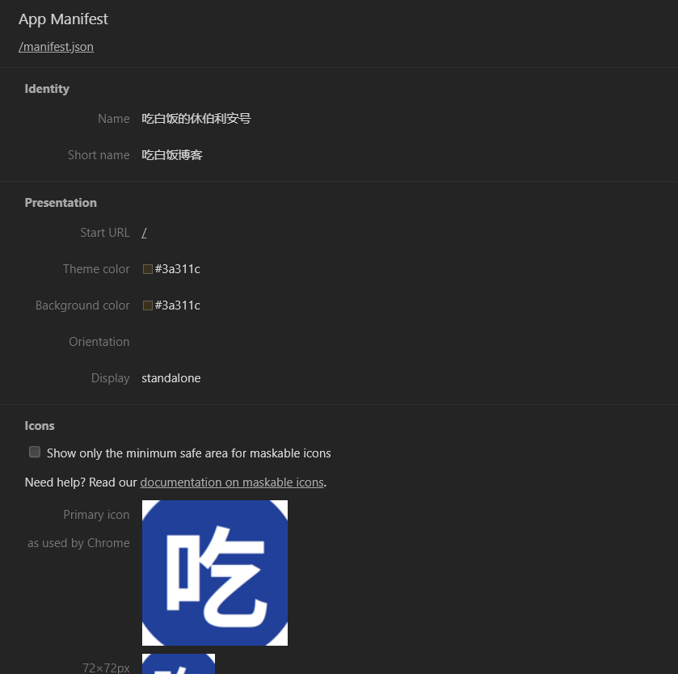
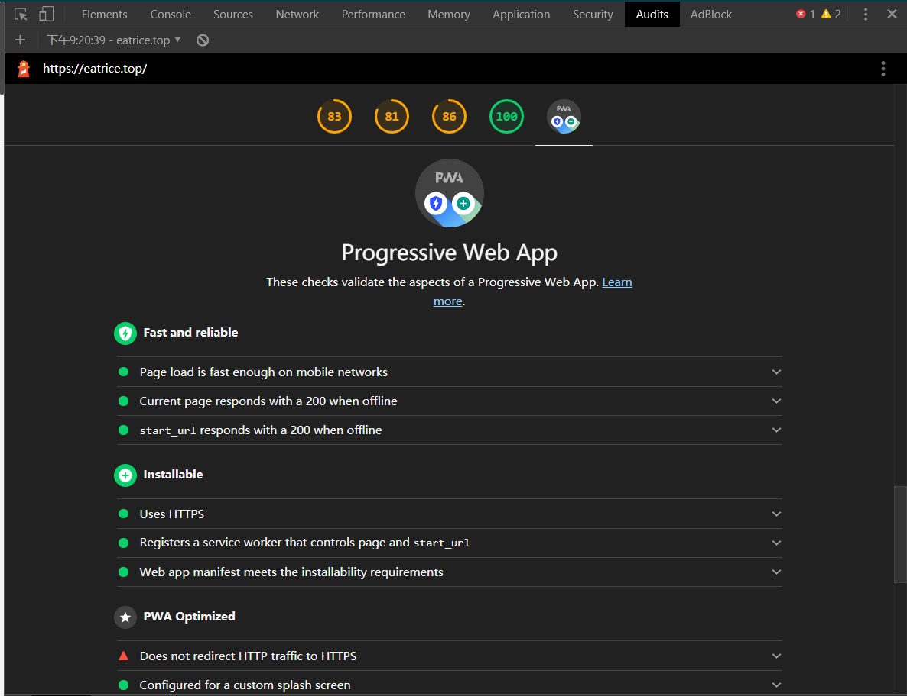

给hexo博客添加PWA支持
本文最后更新于：1 年前
简介
PWA(Progressive Web App)的中文名叫做渐进式网页应用，早在2014年， W3C 公布过 Service Worker 的相关草案，但是其在生产环境被 Chrome 支持是在 2015 年。因此，如果我们把 PWA 的关键技术之一 Service Worker 的出现作为 PWA 的诞生时间，那就应该是 2015 年。
自 2015 年以来，PWA 相关的技术不断升级优化，在用户体验和用户留存两方面都提供了非常好的解决方案。PWA 可以将 Web 和 App 各自的优势融合在一起：渐进式、可响应、可离线、实现类似 App 的交互、即时更新、安全、可以被搜索引擎检索、可推送、可安装、可链接。[1]
由于hexo为静态博客，因此不需要具备推送功能（其实是我没搞懂）。因此PWA的特性包括其渐进式、可离线，可以作为提高网站体验和提高网站家在速度的一个方法。因此下面将从其主要内容和hexo如何安装两个方面以“吃白饭的休伯利安号”为例来简单演示一遍安装过程。
内容
渐进式
什么是渐进式，即将传统的web应用，应用现代的技术和方法使之在能够有桌面应用一般的体验，即为渐进式web应用。渐进式web应用可以同时运行在传统的浏览器上，像普通的网站一样进行浏览和操作；其同时也可以运行在现代功能完善的浏览器中，可以使其具备更多的效果和功能。比较常见的有可安装，即在支持的浏览器和操作系统上可以生成访问图标，通过图标可以可桌面应用一样访问应用；消息推送，即访问应用时服务器端可以通过应用的后台进程主动向客户端推送消息，类似于桌面应用的消息队列。
可离线
支持应用离线访问，即正常访问应用时，后台进程会自动缓存内容，下次访问时应用优先从缓存区读取数据，然后是进行web请求。因此可离线实质上充当了web代理服务器的职责，先是将正常请求代理到缓存区，再是将缓存区不足的文件进行正常的网络请求，通过此方法实现了离线的目标。根据可离线的规律，应用在一次访问缓存之后二次访问即可断网。
安装
Web app manifest
首先要实现PWA的可安装性，需要有一个清单文件manifest.json。manifest.json是一个简单的json文件，它描述了我们的图标在主屏幕上如何显示，以及图标点击进去的启动页是什么，自动生成manifest.json的工具：manifest.json生成工具（需要梯子），本站的JSON格式如下所示：
1 | |
其中：
- start_url 可以设置启动网址
- icons 可以设置各个分辨率下页面的图标，适配不同的尺寸的路径
- background_color 会设置背景颜色， Chrome 在网络应用启动后会立即使用此颜色，这一颜色将保留在屏幕上，直至网络应用首次呈现为止。
- theme_color 会设置主题颜色
- display 设置启动样式
配置好manifest.json后进行调试，打开浏览器的控制台如下图所示，即文件配置成功。

离线使用
离线使用依赖Service Work，其本质是一段运行在并行于主进程的后台进程上，他不参与web交互功能，主要职责是和服务器交互，和指示缓存的内容。其详细的生命周期和原理文档详见：Using Service Workers。可以通过文档中的生命周期对这段后台脚本进行深度开发。
hexo为静态博客，因此只需要实现离线使用即可，不需要进行消息推送，因此可以使用固定服务注册脚本，在hexo中服务注册脚本有着专门的插件进行生成：
| hexo-offline | hexo-pwa | hexo-service-worker |
| hexo的离线插件不包括安装 | 百度出的PWA综合插件，支持同时生成manifest.json，有很多的配置项 | 和hexo-offline类似 |
三个插件的原理相同，通过注册SW服务，配合manifest.json，文件达到可安装和可离线的功能，本站使用的是hexo-service-worker插件，下面是插件使用的细节：
- 首先安装
hexo-service-worker插件：
1 | |
- 在hexo的全局配置文件
config.yml中添加配置
1 | |
其中
- maximumFileSizeToCacheInBytes 为最大缓存大小，字节数
- staticFileGlobs 关键的文件路径
- stripPrefix 网站文件的根路径绝对位置
- runtimeCaching 缓存选项
- urlPattern 文件的正则匹配
- handler 缓存模式
- origin 网站访问域名(代理域名)
如此支持离线的PWA即配置成功。若要使用其他两个插件进行配置可以参考：
然后执行生成发布。使用新版的chrome访问网站，打开控制台的Audits点击生成报告，就能看到网站是否支持PWA啦，如下图所示：

发布之后可以先访问一下网站的一些页面，然后就可以拿把大剪子网线访问你的网站啦~
关于消息推送，还没太搞明白其中的原理，自己的博客也用不到，所以就不仔细讨论啦。
参考资料
本博客所有文章除特别声明外，均采用 CC BY-SA 4.0 协议 ，转载请注明出处！